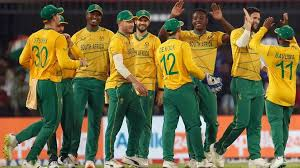

South Africa Test Team
Strong contenders with a potent bowling attack.
About South Africa Test Team

Country: South Africa
Home Ground: Various (e.g., Wanderers, Johannesburg)
Captain: Temba Bavuma
Coach: Shukri Conrad
South Africa’s Test team, the Proteas, is known for its pace bowling and resilient batting.
South-African Players
Temba Bavuma (C)
Captain, batsman.
Dean Elgar
Batsman, gritty opener.
Aiden Markram
Batsman, top-order.
Tony de Zorzi
Batsman, opener.
Kyle Verreynne
Wicketkeeper-batsman, reliable.
Marco Jansen
All-rounder, pace bowler.
Kagiso Rabada
Bowler, pace spearhead.
Anrich Nortje
Bowler, express pace.
Keshav Maharaj
Spinner, left-arm orthodox.
Lungi Ngidi
Bowler, pace bowler.
David Bedingham
Batsman, middle-order.